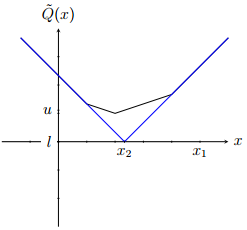

Two-stage SP problem
$$
\def \minimize {\textrm{minimize}}
\def \st {\textrm{subject to}}
\def \Real {\mathbb{R}}
\renewcommand{\vec}[1]{\mathbf{#1}}
\begin{array}{ll}
\minimize & \vec{c}^T \vec{x} + \textrm{E}_{\vec{\xi}}[Q(\vec{x}, \omega)] \\
\st & A \vec{x} = \vec{b}, \\
& \vec{x} \in \Real^{n_1}_+, \\
\end{array}
$$
where the $n_1$-dimensional vector $\vec{x}$ represents the first-stage
decisions, $A$ is a fixed $m_1 \times n_1$ matrix, $\vec{b} \in \Real^{m_1}$ and
$\vec{c} \in \Real^{n_1}$ are fixed vectors and $Q(\vec{x}, \omega)$ is the
value function of the recourse problem. $\vec{\xi}$ is a vector of random parameters.
Recourse problem
$$
\begin{array}{ll}
\minimize & \vec{q}(\omega)^T \vec{y} \\
\st & T(\omega) \vec{x} + W(\omega) \vec{y} = \vec{h}(\omega), \\
& \vec{y} \in \Real^{n_2}_+. \\
\end{array}
$$
where the $n_2$-dimensional vector $\vec{y}$ represents
the second-stage recourse decisions and $\omega \in \Omega$ represents a random
outcome.
For a given realisation $\omega$, $T(\omega)$ is a fixed $m_2 \times n_1$
matrix, $W(\omega)$ is a fixed $m_2 \times n_2$ matrix,
$\vec{h}(\omega) \in \Real^{m_2}$ and $\vec{q}(\omega) \in \Real^{n_2}$ are
fixed vectors.
Deterministic equivalent
\begin{array}{rccccccccc}
\minimize & \vec{c^T} \vec{x} &+& p_1 \vec{q_1}^T \vec{y_1} &+& \ldots &+& p_S \vec{q_S}^T \vec{y_S} \\
\st & A \vec{x} & & & & & & &=& \vec{b}, \\
& T_1 \vec{x} &+& W_1 \vec{y_1} & & & & &=& \vec{h_1}, \\
& \vdots & & & & \ddots & & & & \vdots \\
& T_{S} \vec{x} &+& & & & & W_S \vec{y_S} &=& \vec{h_S}, \\
& \vec{x} \in \Real^{n_1}_+, \\
& \vec{y_s} \in \Real^{n_2}_+, \quad s = 1, ..., S. \\
\end{array}
- Especially suitable for solving with interior-point methods due to structure.
- Can be very large and solvers may run of memory.
L-shaped method

- A cutting-plane method proposed by Van Slyke and Wets (1969)
- Application of Benders’ decomposition (Benders, 1962) to the solution of the deterministic
equivalent problem.
- The L-shaped method iteratively builds approximations of the expected recourse
function $\tilde{Q}(\vec{x}) = \textrm{E}[{Q(\vec{x}, \omega)}]$ and the
feasible region.
- Requires solving multiple subproblems at each iteration making it a good candidate
for parallelization
Current problem
During the iteration $k$ the L-shaped method
solves the current (master) problem:
$$
\begin{array}{rl}
\minimize & \vec{c}^T \vec{x} + \theta \\
\st & A \vec{x} = \vec{b}, \\
& D_k \vec{x} \geq \vec{d_k}, \\
& E_k \vec{x} + \theta \geq \vec{e_k}, \\
& \vec{x} \in \Real^{n_1}_+ , \; \theta \in \Real.
\end{array}
$$
$D_k \vec{x} \geq \vec{d_k}$ - feasibility cuts, $E_k \vec{x} + \theta \geq \vec{e_k}$ -
optimality cuts.
Optimality cuts
The optimality cuts are defined as follows (Birge and Louveaux, 1997):
$$
\left( \sum_{s=1}^S{p_s} (\vec{\pi}_s^*)^T T_s \right) x + \theta \geq
\sum_{s=1}^S{p_s} (\vec{\pi}_s^*)^T h_s,
$$
where $\vec{\pi}_s^*$ is the vector of simplex multipliers associated with an
optimal solution of the recourse problem for scenario $s$:
$$
\begin{array}{ll}
\minimize & \vec{q_s}^T \vec{y} \\
\st & W\vec{y} = \vec{h_s} - T_s \vec{x^*}, \\
& \vec{y} \in \Real^{n_2}_+, \\
\end{array}
$$
where $\vec{x^*}$ is an optimal solution of the current problem.